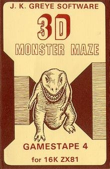
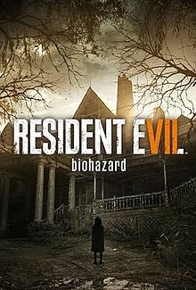

The first recorded horror game was made in 1982, called 3D Monster Maze. It involved dropping the player into a randomly generated maze, that was occupied by a T-Rex. As the player would move around, the T-Rex would begin to follow them, giving the player anxiety, which was shown in the “anxiety level” status bar that would give announcements such as: “REX LIES IN WAIT” or “RUN HE IS BEHIND YOU”.
Resident Evil 7: Biohazard is the franchises return to its survival horror roots, emphasizing exploration. The storyline is as follows: You are Ethan Winters, a man in search for his wife in a derelict plantation that is occupied by the cannibal Baker family, after he receives a message from her, when she has been presumed dead for 3 years. To keep the experience and to avoid spoilers, that is the most I will explain about the storyline, and I highly recommend you go and play the game yourself.
